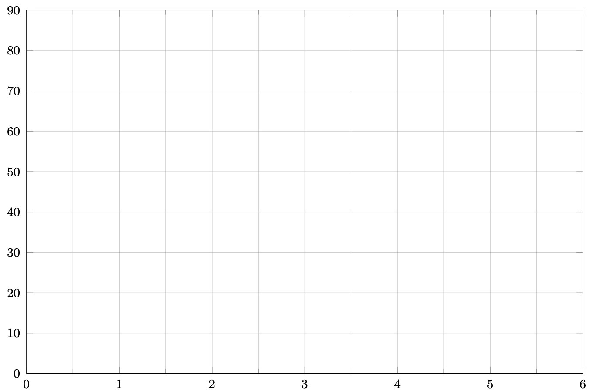
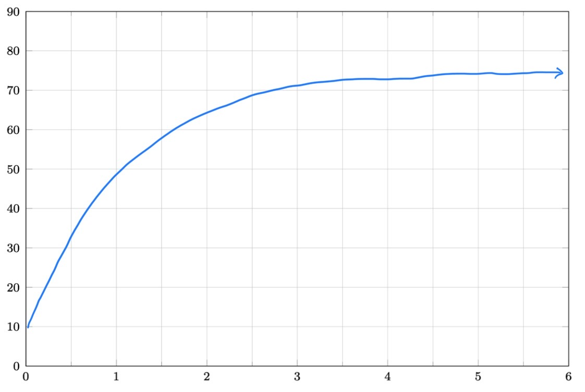

Section 2.3 Section 2.4 - Interpreting Derivatives
Worksheet 2.3.1 Worksheet
1.
On a hot summer day, Bob takes a carton of ice cream out of a 10\(^\circ\)F freezer and forgets about it. Suppose room temperature is \(75^\circ\)F.-
Sketch a graph of temperature \(f(t)\) of the ice cream as a function of time, where \(t\) is time in hours.
 - What are the units of \(f'(t)\text{?}\)
- Is the derivative positive or negative?
- Interpret the statement \(f'(4)=3\) in the context of the problem.
- 
- The units are \(^\circ\)F per hour (always output per input)
- The derivative is positive as the temperature is increasing
- After 4 hours, the temperature of the ice cream is increasing at a rate of 3\(^\circ\)F per hour.